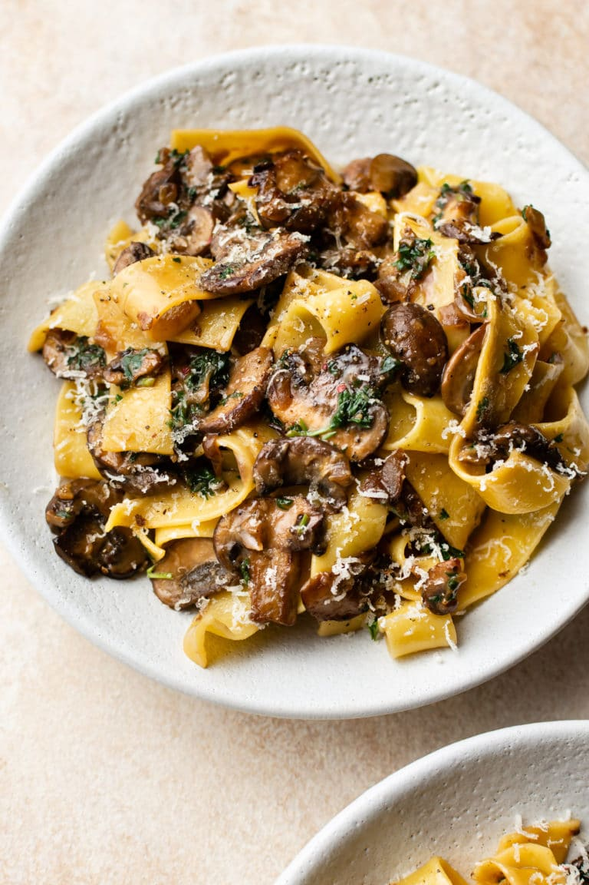

Mushroom Pasta

Mushrooms and greens sautéed in a creamy mustard sauce.
This is an easy, tasty, and filling meal that's great for cleaning out your fridge. It takes only a few minutes to prepare, and is great for substitutions.
Feel free to swap butter, milk, and cheese for non-dairy alternatives to make a vegan version. You can also experiment with different varieties of mushrooms and greens!
Ingredients
- Butter or margarine (about 1 Tbsp)
- Garlic (4-5 diced cloves)
- Button mushrooms or other variety (8-10, thinly sliced)
- Leek (1-2 stalks or other aromatic green, thinly sliced)
- Brown mustard (about 1 Tbsp)
- Milk or non-substitute (about 1/2 cup)
- Spaghetti or other pasta (1 lb)
- Parmesan cheese or similar
- Salt, pepper, parsley to taste
Steps
- Bring a large sauté pan to medium-high heat. Add the butter and let melt
- When butter is melted and hot, add the garlic. Sauté for about 30 seconds
- Add the mushrooms and stir thoughly. Add a large pinch of salt, and continue stirring for about 3 minutes.
- Add the leek or other green, and stir until wilted.
- Lower the heat to a simmer, and add the mustard and milk. Mix thoughly and stir every few minutes.
- Bring a large pan of water to a boil and cook the pasta.
- Add a few spoonfuls of the pasta water to the pan of mushrooms, then drain the pasta.
- Add the cooked pasta, and toss mixture to coat. Optionally, sprinkle in cheese, and add salt and pepper to taste.
- Serve hot, with a garnish of parsley.